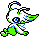

#251
Celebi
PsychicGrass
Abilities: Natural Cure, Natural Cure, Natural Cure
Base stats BST 600
HP100
Attack100
Defense100
Speed100
Sp. Atk100
Sp. Def100
Evolution
None detected.
Level-up learnset
LevelMoveType
Lv. 1Heal BellNormal
Lv. 1ConfusionPsychic
Lv. 1Leech SeedGrass
Lv. 1RecoverNormal
Lv. 6SafeguardNormal
Lv. 14AncientpowerRock
Lv. 18Baton PassNormal
Lv. 30Psychic M—
Lv. 34Future SightPsychic
Lv. 38Nasty PlotDark
Lv. 46Perish SongNormal